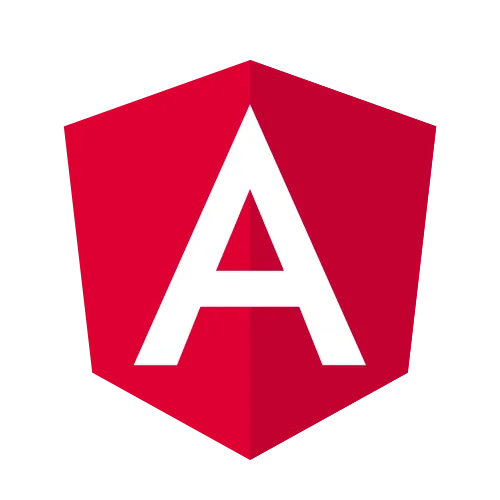
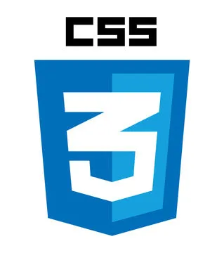

Compétences
Au cours de ma formation universitaire et personnelle, j'ai eu l'opportunité d'acquérir une solide base de connaissances théoriques et pratiques dans le domaine de l'informatique. Cette expérience m'a permis de me spécialiser dans plusieurs technologies clés, avec un accent particulier sur le développement web. J'ai appris à concevoir des applications interactives et performantes, en utilisant des langages comme HTML, CSS, JavaScript, ainsi que des frameworks populaires tels qu'Angular et Spring Boot. J'ai également exploré des concepts avancés de programmation, tels que la gestion des bases de données en utilisant PostgreSql, les bonnes pratiques de l'architecture logicielle. Grâce à mes projets personnels et académiques, j'ai pu mettre en œuvre ces compétences dans des projets réels, renforçant ainsi ma capacité à résoudre des problèmes complexes et à m'adapter aux évolutions technologiques.
-
Spring Boot
-

Angular
-

JavaScript
-
TypeScript
-

Docker
-

Java
-

Python
-

PostgreSql
-

CSS
-

HTML